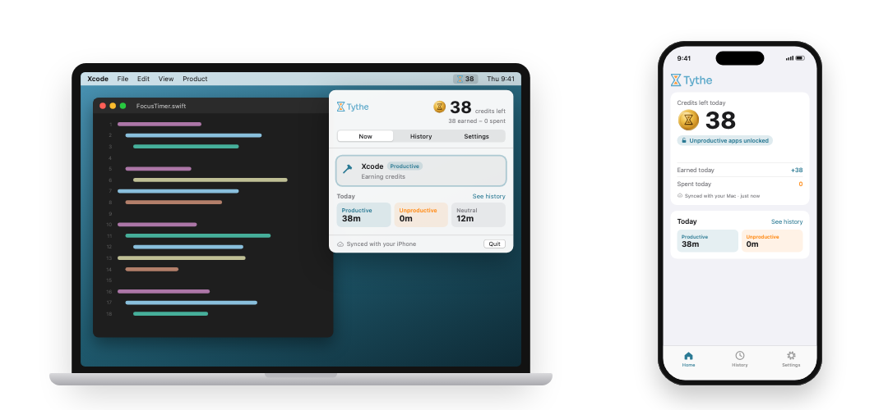
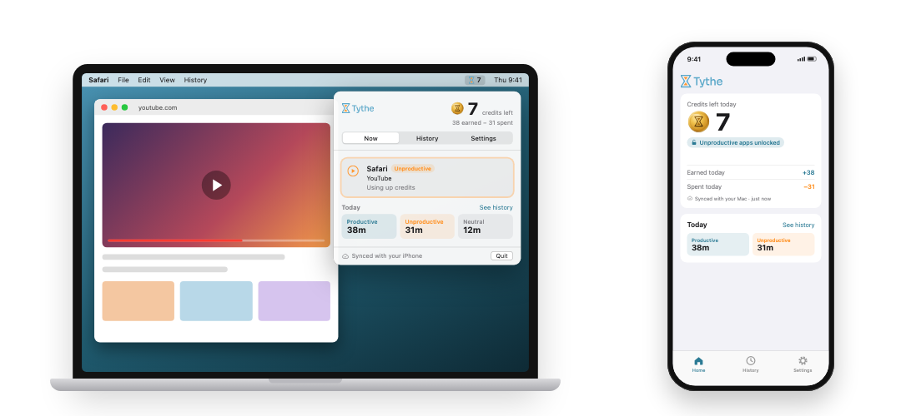
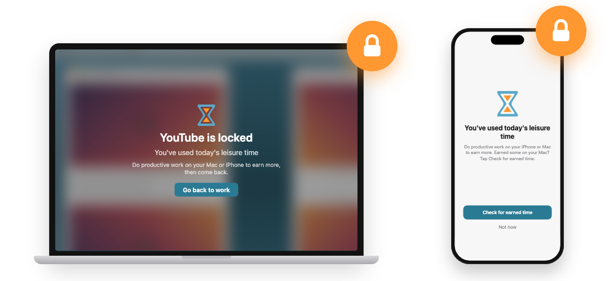

Free beta · Mac + iPhone
Earn screen time through focused work.
A native local-first app for Mac and iOS that limits distractions across devices. No forced lockouts. Just an exchange rate.
Works on an iPhone (iOS 17+), a Mac (macOS 14+), or both together.
Willpower alone doesn't work.
"Just a quick look" becomes an hour
Feeds, videos and games are built to keep you there. Screen time adds up before you notice.
Blockers get switched off
All-or-nothing app blockers feel like a punishment, so they rarely last more than a few days.
The important work slips
The to-do list stays the same while the scrolling doesn't. Tomorrow, again.
Tythe takes a different approach. You don't give up the apps you enjoy. You earn them.
How it works
Choose your productive and unproductive apps
Pick the apps and websites you work in, and the ones that eat your time. Everything else is neutral and doesn't count either way. On your Mac, describe what you work on and Tythe judges websites for you.
Productive work earns credits
Every minute in a productive app or website earns credits, on your Mac or your iPhone. You choose the rate, from 3 minutes of work for 1 credit up to 1 minute of work for 3 credits. Exercise from Apple Health can earn credits too.

Unproductive apps spend them
Social, video and games use your credits up, one credit per minute, on either device. Your Mac and iPhone share one balance, so credits earned on one can be spent on the other.

Run out, and unproductive apps lock
Until you do more productive work. On iPhone, Screen Time locks them. On Mac, a frosted lock screen covers them, even full-screen games. Earn more credits and they unlock on their own.

Built for Apple, made to get out of your way.
One balance across your Mac and iPhone
Works seamlessly across devices signed into the same iCloud. Earn credits on one, spend them on the other, and stay in step automatically.
Apple Intelligence judges your browsing
Describe the work you do, and Apple Intelligence can tell whether a Safari or Chrome page is productive or not, privately on your Mac.
Earn credits from exercise
Optionally link your wearable through Apple Health. Apple Watch exercise minutes, or heart-rate minutes from other trackers, can earn credits too.
Set how strict earning feels
Change the rate that turns productive work into credits. Make it easier when you need a break, or stricter when you want more focus.
No signup. Just start.
There's no account to create. Download Tythe, use your existing iCloud, and get going in a couple of minutes.
Fully native for Apple
Built for Apple with native integrations like Screen Time, iCloud, and Apple Health, so it feels seamless if you already live on Mac and iPhone.
Simple pricing, when the time comes.
One plan that covers Mac and iPhone. Pick the pace that suits you.
Join the free beta
Tythe is in beta on Apple's TestFlight. It takes about two minutes to get set up. The first 100 testers get Tythe free for life.
Join the beta on TestFlight- Install TestFlight from the App Store on your iPhone or Mac. Get TestFlight
- Open the beta link on that device, using the button.
- Tap Accept, then Install. Open Tythe and follow the short setup. Using both? Do the same on your other device.
Questions
Do I need both a Mac and an iPhone?
No. Tythe works on an iPhone on its own, a Mac on its own, or both together. With both, they share one balance.
Is it free?
Yes, the beta is free to join through TestFlight. The first 100 beta testers also keep Tythe free for life. After that, paid plans will start at $4 a month, $40 a year, or $100 once for lifetime access.
Who decides what's productive?
You do. You choose your productive and unproductive apps. On your Mac you can also describe your work, add websites, and correct any page Tythe gets wrong so it learns.
What happens when I run out of credits?
Your unproductive apps lock. On iPhone you'll see a Screen Time lock screen; on Mac a frosted lock screen covers the app. Do more productive work and they unlock automatically. Your productive apps always stay open.
Which browsers work on Mac?
Safari and Chrome.
What happens to my data?
Your activity stays on your devices and in your own private iCloud, which we can't see. Tythe can send a short anonymous daily summary to help improve the app, with no app or website names, times or health data. You can switch it off in Settings. Read the privacy policy.
What do I need?
An iPhone with iOS 17 or later, or a Mac with macOS 14 or later. Both devices need to be signed in to the same Apple Account with iCloud Drive on to share a balance.
Support
Questions, feedback or a problem? Email support@trytythe.com and I'll get back to you.
Testing through TestFlight? You can also send feedback straight from the TestFlight app, or take a screenshot while using Tythe.